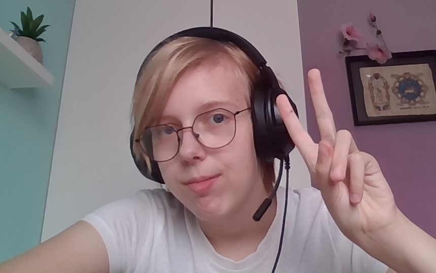
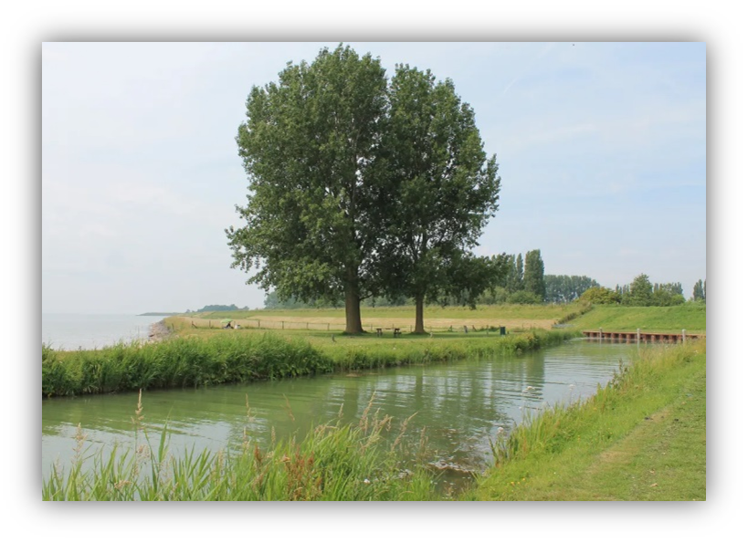
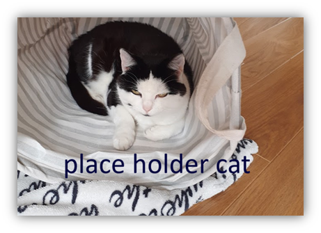
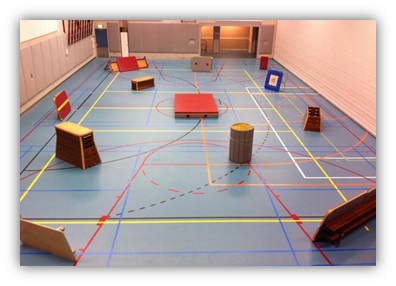

Shannon Ruiter
Ik ben 16 jaar en kom uit Wijdenes in Noord-Holland-Noord, hiervoor zat ik op De Rede in Lelystad.
Mijn woonplaats
Ik kom uit Wijdenes in Noord-Holland-Noord, het dorp ligt tussen Hoorn en Enkhuizen in. Het is een klein dorp en er is bijna niks te doen, we hebben wel een school en een haven inclusief sinterklaas intocht.
In mijn vrije tijd
Vaak in mijn vrije tijd rust ik uit door filmpjes op YouTube te kijken of livestreams op Twitch. Anders doe ik ook tekenen, gamen en kletsen met mijn vrienden.
Wat kan ik al
Ik ben goed in tekenen met een muis, Engels. En ben overal een creatief persoon. Ik heb een keer tien tellen in de rimboe gewonnen op één tel als verstopper.
Mijn top 10 games
- 1. Sonic Unleashed
- 2. Pressure (ROBLOX)
- 3. Cats Are Liquid
- 4. FnaF
- 5. Undertale
- 6. Luigi’s Mansion 3
- 7. Mario Kart
- 8. That One Undertale Game (ROBLOX)
- 9. Phighting (ROBLOX)
- 10. Doors (ROBLOX)